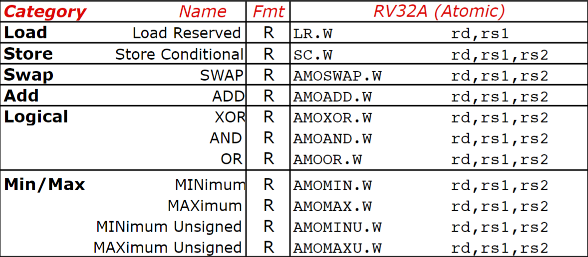
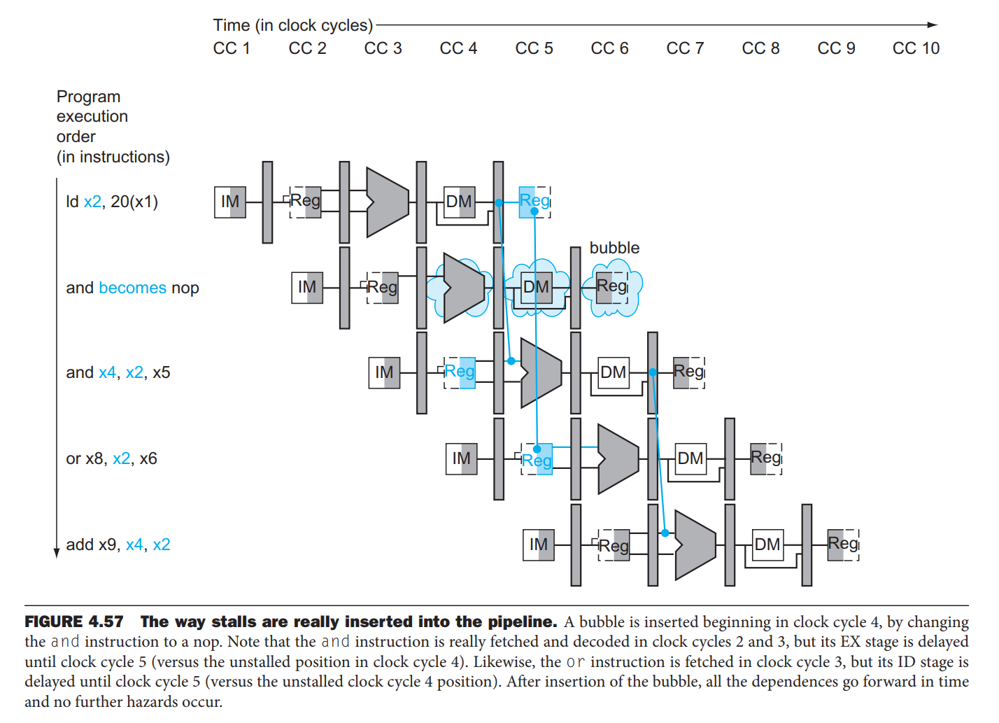

RISC-V¶
| 对应课程 | 对应书本 |
|---|---|
| 《计算机组成》 | 《计算机组成与设计：硬件/软件接口 RISC-V 版》 |
Abstract
- 算是课程笔记，也算是读书笔记。
- 正文都是应该记在脑子中的东西，不需要记忆的都折叠起来了。
- 写得尽可能简略，有些地方一个词代表一整个句子了。
导论¶
计算机系统八大思想
- 摩尔定律 Moore's Law
- 抽象 Abstraction
- 普遍情况 Common Case
- 并行 Parallelism
- 流水线 Pipeline
- 预测 Prediction
- 存储器结构层次 Memory Hierarchy
- 冗余 Redundancy
性能方面的概念：
- 吞吐量 Throughput：实际处理的任务数
- 带宽 Bandwidth：能够处理的任务数
CPU 的几个指标：
- （程序在 CPU 上总的）执行时间 Execution Time
- （指令所消耗的）时钟周期数 Clock Cycle
- （CPU 的）时钟频率/周期 Clock Rate/Cycle Time
- （指令的）平均周期数 CPI：Cycles Per Instruction
- MIPS：Million Instructions Per Second
其他：
- 不太常见的存储单位：T P E Z Y
- Amdahl 定律（无非就是分有影响没影响）
RISC-V 32I 指令集¶
一些东西的大小：
- 寄存器：64b。
- 字 Word：32b。衍生 Half Word、Double Word。
- 地址：64b，即可寻 \(2^61\) dword。
一些概念：
- 对齐（其他指令集中重要）：要求 word 起始于 word 整数倍，dword 起始于 dword 整数倍。RISC-V 对此不要求但低效。
- 小端
- 扩展：不足 64b 的数据载入寄存器需要做。
- lw, lh, lb; lwu, lhu, lbu
指令¶
细节查阅 RISC-V Reference Card 和 RISC-V 指令集手册。
{kind=link}
寄存器名称
调用者保存，说明被调可以随意使用。
被调保存，需要保存后才能覆盖使用。
{kind=link}
RISC-V 32I
{kind=link}
RVM 乘除法扩展

常见伪指令
{kind=link}
指令格式
理解 SB 和 UJ 型指令立即数：StackOverflow
符号位保持在最前面用于扩展，其余位尽可能与其他指令保持一致，用走线避免移位运算。
- 名称和意义都要记忆并理解。
- 从意义能推出用法和格式。
值得注意的问题
- 立即数的符号问题
https://stackoverflow.com/questions/61046150/can-address-be-negative-in-the-immediate-field-of-the-risc-v-i-type
C 与汇编¶
简单模块¶
LOOP:
slli t1, t0, 3
add t1, t1, t2
ld t3, 0(t1)
bne t3, t4, EXIT
addi t0, t0, 1
beq x0, x0 EXIT #(j LOOP)
EXIT:
函数调用¶
函数调用前后的要求，也是我们可以检查正确性的地方：
sp应当相同s寄存器应当不变- 默认应该返回到
ra/x1。
为了完成上面的要求，函数调用归纳为 6 个步骤：
- 设置参数
a0-a7/x10-x17。保存自己需要的寄存器a0-a7/x10-x17和t0-t6/x5-x7,x28-x31。 - 调用函数。
jal保存返回地址到x1/ra。 - 移动栈指针
sp。保存调用者寄存器s0-s11/x8-x9,x18-x27。 - 执行。
- 放置返回值。
a0/x10。 - 返回。
jalr x0, 0(x1)。
汇编与机器码¶
注意 RISC-V 指令是小端存储的，从中读取的立即数也是小端存储的，需要反着来。
分段：func7（7）、rs2（5）、rs1（5）、func3（3）、rd（5）、opcode（7）。
其他¶
-
各类跳转总结：
- 长度：
- PC 相对寻址：branch，SB-type 12b（imm[12:1]）
- 立即数、基址寻址 jump：UJ，20b（imm[20] + imm[10:1] + imm[11] + imm[19:12]）
- 32b 地址跳转：结合
lui和addi：
- 长度：
锁与原子化 Lock and Atomicity
RVA 扩展原子指令集： 
{kind=link}
总结：一个 C 排序程序
RISC-V 32I CPU 实现¶
约定¶
- 时序：
- 单周期：寄存器在时钟上升沿更新。从而可以在一个时钟周期读写同一个寄存器：读到现有值，写入值在下一个上升沿才生效。
- 流水线：一个周期分成两部分，前半写入，后半读取。
单周期¶
{kind=link}
分类总结：
-
R-type
-
ImmGen
需要产生的立即数：
- I-type：
imm[11:0] - S-type：
imm[11:5] + imm[4:0] - B-type：
imm[12] + imm[10:5] + imm[4:1] + imm[11]
将指令对应部分引出对应模式，然后根据指令类型选择。
- Opcode[5]
- 0：Load I-type
- 1：Store S-type
- Opcode[6]
- 0：Data Transfer ↑
- 1：Conditional Branch B-type
- I-type：
-
控制信号
graph LR opcode --> Branch ALU --> Zero Branch --> PCSrc Zero --> PCSrc opcode --> Mux["`Mux(4) ---- ALUSrc Branch MemtoReg Jump`"] opcode --> R/W["`R/W(3) ---- MemRead MemWrite RegWrite`"] opcode["opcode[6:0]"] --> ALUOp["ALUOp[1:0]"] ALUOp --> ALUControl["`ALUControl[3:0] ---- Ainvert Bnegate Operation[1:0]`"] func7 --> ALUControl func3 --> ALUControl具体信号


-
具体信号表
其他
- Memory 读写都需要控制信号。读错产生的结果与存储器层次结构有关。
五级流水线¶

三种冒险：
- 结构冒险：多个指令需要同一硬件，在本书的实现中不需要考虑。
- 数据冒险：需要的数据还没准备好。
- 控制冒险：分支预测错误。
会在哪里遇到结构冒险？
如果我们的指令内存和数据内存是同一个内存，那么 MEM 阶段指令读取内存的同时，IF 阶段指令也需要读取内存，此时发生结构冒险。
-
Forwarding
只考虑到 EX 阶段的 forwarding：
情况 说明 ID/EX Rs = EX/MEM Rd 需要的数据刚从 ALU 计算出来 ID/EX Rs = MEM/WB Rd 需要的数据即将被写入 上面两种情况可能同时发生，说明对同一个寄存器进行了连续操作，此时应当从 EX/MEM 阶段取最新的数据。
不应该 forwarding 的情况：
情况 措施 指令不涉及寄存器修改 检查 RegWrite向 x0写入的数据检查 Rd是否为x0用一个 Forwarding Unit 选择 ALU 的输入。
-
Stall
- Load-Use 数据冒险：Load 指令的数据还没准备好。
- 控制冒险：等待分支结果。但不采用，因为低效。

用一个 Hazard Detection Unit 判断是否需要暂停。如果需要暂停，将控制信号刷为
nop，同时保持 ID 之前的寄存器状态不变。 -
Branch Prediction
预测分支是否发生，解决控制冒险。
- 静态预测：总是预测不发生。
- 动态预测：根据历史记录预测。
{kind=link}
{kind=link}
{kind=link}
{kind=link}
异常与中断¶

RISC-V 中异常一般指（内部或外部引起）程序控制流意外的变化，中断指外部事件引起的变化。
- SEPC：异常发生时的 PC
- SCAUSE：
Info
- 另一种处理方式是 Vectored Interrupt，即中断向量表。提供多个中断处理程序的入口地址。